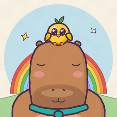

Taro & Yuzu
Tiny wordless cartoons for little ones. Taro is a calm, sleepy capybara; Yuzu is a curious little chick with a leaf on her head. Every short is one small adventure: snacks, colours, counting, good habits and big feelings, told with music instead of words so children everywhere can enjoy it.
Every frame is drawn in code and every note is composed. The show is published on YouTube as content made for kids.
The Taro & Yuzu uploader
"Taro & Yuzu uploader" is a private tool used only by the channel owner to upload the show's own videos to the Taro & Yuzu YouTube channel through the YouTube Data API. It has no other users.
© 2026 Abdelrahman Al-Omari (ARO Solutions)